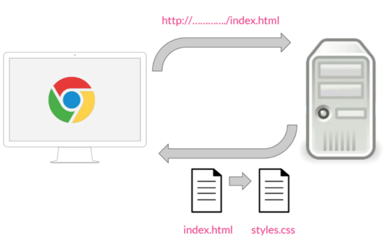

CSS3: Estilos Internos y Externos
- ¿ QUE SIGNIFICA CSS3?
Es una tecnologia que ha tenido una evolucion en el tiempo, que actualmente se encuentra en su version 3, como su propio nombre indica. sus siglas corresponden a: "Cascading Style Sheeets", que tiene el siguiente significado:
- Cascading, significa que los estilos que aplicamos a los elementos de una pagina web se propagan a los elementos que contiene, se propagan en cascada.
- Style, porque mediante CSS lo que hacemos es aplicar estilos visuales a los distintos elementos de nuestra pagina web.
- Sheets, que significa hojas, porque los estilos de una pagina web se añaden en ficheros aparte, en ficheros con la extension . css de manera general.
- DEFINICION DE CSS3
Es un lenguaje de diseño grafico que permite definir y crear la presentacion de un documento estructurado escrito en un lenguaje de marcado. Es muy usado para establecer el diseño visual de los documentos web e interfaces de usuario escritas en HTML.
- FUNCIONAMIENTO
Veremos un pequeño esquema que es lo que sucede desde que se solicita una pagina web hasta que se le aplica el estilo. El proceso es el siguiente:

"P, J. (2019, 20 enero). Figura 1. Proceso [imagen]. Recuperado de https://openwebinars.net/blog/que-es-css3/""
Cuando desde un navegador, por ejemplo Chrome, solicitamos una pagin a traves de una direccion, por ejemplo, http:/..../index.html, esta peticion va a un servidor web, que nos devuelve la pagina que se ha solicitado.
Para aplicar estilos en la spaginas HTML, se utiliza un fichero aparte, una hoja de estilos con la extension .css, por lo que cuando estos dos documentos llegan al navegador, va a leer el documento HTML, le aplica los estilos CSS y los muestra.
"Tomado de: JimÉNez, J. D. P. (2019, 20 enero). Qué es CSS3 y sus fundamentos. Recuperado 25 de octubre de 2020, de https://openwebinars.net/blog/que-es-css3/""